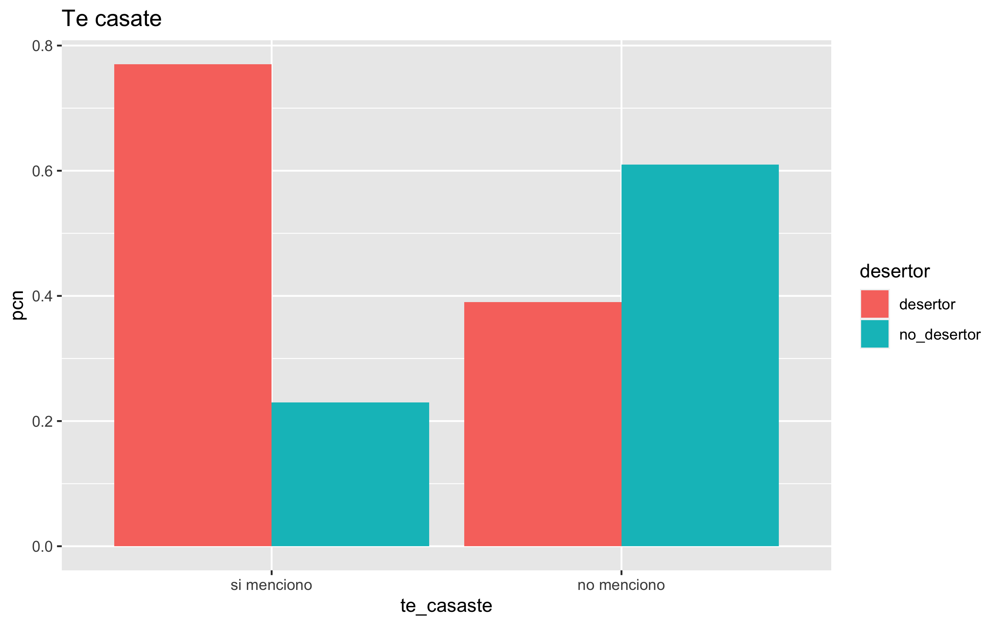

3 Estadísticos descriptivos del Abandono Escolar
Empezaremos este ejercicio dividiendo nuestra encuesta, en dos set de datos uno para el entrenamiento y otro para la prueba, por ese motivo decidimos separa la base usando un muestreo estratificado debido a que las muestra no es balanceada.
De una muestra total de \(8,136\) encuestados, decidimos guardar \(20\%\) como datos de prueba, siendo \(1,628\) y usar el restante \(80\%\) (\(6,508\)) como datos de entrenamiento, a su vez, separar el 20% de los datos de entrenamiento para usarlos como datos de validación \(1,302\).
| Division | Total | Porcentaje |
|---|---|---|
| Prueba | 1,628 | 20% |
| Entrenamiento | 6,508 | 80% |
| Total | 8,136 | 100% |
Posteriormente la muestra de entrenamiento se subdivide, para crear espacio para la muestra de validación.
| Division | Total | Porcentaje |
|---|---|---|
| Entrenamiento | 5,206 | 80% |
| Validación | 1,302 | 20% |
| Total | 6,508 | 100% |
set.seed(2021)
encuesta_part_inicial <- initial_split(encuesta, strata = desertor, prop = 0.80)
encuesta_total <- training(encuesta_part_inicial)
encuesta_part_val <- validation_split(encuesta_total, prop = 0.80)
encuesta_part_val$splits## [[1]]
## <Training/Validation/Total>
## <5206/1302/6508>3.1 Limpieza, exploración y análisis conceptual
Primero vamos a establecer que la variable desertor es la que estamos buscando, esta toma dos valores, 1 si el estudiante desertó y 0 si no lo hizo.
Podemos observar que se cuenta con \(42%\) de desertores y \(58%\) no desertores en la encuesta.
set.seed(2021)
entrena <- training(encuesta_part_val$splits[[1]])
nrow(entrena)## [1] 5206entrena%>% count(desertor) %>%
mutate(pcn = round(n / sum(n),2))## # A tibble: 2 × 3
## desertor n pcn
## <fct> <int> <dbl>
## 1 desertor 2167 0.42
## 2 no_desertor 3039 0.58tabla_univariada <- function(datos, variable, target){
datos %>% count({{ variable }}, {{ target }}) %>% group_by({{ variable }}) %>%
mutate(pcn = round(n / sum(n),2)) }3.2 Resumen general
library(skimr)
skim(entrena)| Name | entrena |
| Number of rows | 5206 |
| Number of columns | 59 |
| _______________________ | |
| Column type frequency: | |
| factor | 55 |
| numeric | 4 |
| ________________________ | |
| Group variables | None |
Variable type: factor
| skim_variable | n_missing | complete_rate | ordered | n_unique | top_counts |
|---|---|---|---|---|---|
| edo | 0 | 1 | FALSE | 32 | Mex: 654, CDM: 416, Ver: 408, Yuc: 305 |
| sexo | 0 | 1 | FALSE | 2 | hom: 2670, muj: 2536 |
| sec_publica | 0 | 1 | FALSE | 2 | si: 4697, no: 509 |
| asistencia | 0 | 1 | FALSE | 3 | sie: 2802, asi: 1933, fal: 471 |
| reprueba | 0 | 1 | FALSE | 2 | si: 3396, no: 1810 |
| prom_bach | 0 | 1 | FALSE | 5 | pro: 2061, pro: 1725, pro: 841, pro: 462 |
| becado | 0 | 1 | FALSE | 2 | no: 4270, si: 936 |
| desertor_amigos | 0 | 1 | FALSE | 2 | no: 2662, si: 2544 |
| desertor_hermanos | 0 | 1 | FALSE | 2 | no: 4508, si: 698 |
| faltaba_dinero | 0 | 1 | FALSE | 2 | si: 2644, no: 2562 |
| prob_turno | 0 | 1 | FALSE | 2 | no: 4476, si: 730 |
| disg_estudiar | 0 | 1 | FALSE | 2 | no : 4366, si : 840 |
| mejor_trabaja | 0 | 1 | FALSE | 2 | no : 4395, si : 811 |
| no_entiende | 0 | 1 | FALSE | 2 | no : 4006, si : 1200 |
| esc_lejos | 0 | 1 | FALSE | 2 | no : 4360, si : 846 |
| cambio_casa | 0 | 1 | FALSE | 2 | no : 4862, si : 344 |
| bulling | 0 | 1 | FALSE | 2 | no : 4584, si : 622 |
| disciplina_estricta | 0 | 1 | FALSE | 2 | no : 4147, si : 1059 |
| discriminado | 0 | 1 | FALSE | 2 | no : 4886, si : 320 |
| prob_familia | 0 | 1 | FALSE | 2 | no : 4689, si : 517 |
| te_casaste | 0 | 1 | FALSE | 2 | no : 4802, si : 404 |
| estudiaran_hermanos | 0 | 1 | FALSE | 2 | no : 5006, si : 200 |
| inseguridad | 0 | 1 | FALSE | 2 | no : 4755, si : 451 |
| fallecio_familiar | 0 | 1 | FALSE | 2 | no : 4627, si : 579 |
| embarazo | 0 | 1 | FALSE | 2 | no : 4769, si : 437 |
| malas_instalaciones | 0 | 1 | FALSE | 2 | no : 4745, si : 461 |
| querias_cambiar_escuela | 0 | 1 | FALSE | 2 | no : 4946, si : 260 |
| estudiar_no_sirve | 0 | 1 | FALSE | 2 | no : 4980, si : 226 |
| baja_autoestima | 0 | 1 | FALSE | 2 | no : 4900, si : 306 |
| trab_est | 0 | 1 | FALSE | 2 | no: 3723, si: 1483 |
| tele | 0 | 1 | FALSE | 2 | si: 5081, no: 125 |
| dvd | 0 | 1 | FALSE | 2 | si: 4018, no: 1188 |
| refri | 0 | 1 | FALSE | 2 | si: 4835, no: 371 |
| estufa | 0 | 1 | FALSE | 2 | si: 4960, no: 246 |
| piso_tierra | 0 | 1 | FALSE | 2 | no: 4505, si: 701 |
| lavadora | 0 | 1 | FALSE | 2 | si: 3977, no: 1229 |
| auto | 0 | 1 | FALSE | 2 | no: 3286, si: 1920 |
| microondas | 0 | 1 | FALSE | 2 | si: 2883, no: 2323 |
| computadora | 0 | 1 | FALSE | 2 | no: 2913, si: 2293 |
| agua | 0 | 1 | FALSE | 2 | si: 4691, no: 515 |
| telefono | 0 | 1 | FALSE | 2 | si: 2820, no: 2386 |
| internet | 0 | 1 | FALSE | 2 | no: 3393, si: 1813 |
| excusado | 0 | 1 | FALSE | 2 | si: 4672, no: 534 |
| letrina | 0 | 1 | FALSE | 2 | no: 4442, si: 764 |
| cable | 0 | 1 | FALSE | 2 | no: 3093, si: 2113 |
| desertor | 0 | 1 | FALSE | 2 | no_: 3039, des: 2167 |
| tipo_escuela | 0 | 1 | FALSE | 13 | Col: 940, Pre: 921, CEB: 865, CON: 669 |
| vive_con | 22 | 1 | FALSE | 4 | fam: 4279, ami: 692, par: 108, sol: 105 |
| confia_esc | 0 | 1 | FALSE | 2 | si: 3586, no: 1620 |
| confia_familia | 0 | 1 | FALSE | 2 | si: 4168, no: 1038 |
| confia_amigos | 0 | 1 | FALSE | 2 | si: 3370, no: 1836 |
| tabaco | 0 | 1 | FALSE | 2 | no: 3605, si: 1601 |
| alcohol | 0 | 1 | FALSE | 2 | no: 3267, si: 1939 |
| marihuana | 0 | 1 | FALSE | 2 | no: 5021, si: 185 |
| otras_drogas | 0 | 1 | FALSE | 2 | no: 5081, si: 125 |
Variable type: numeric
| skim_variable | n_missing | complete_rate | mean | sd | p0 | p25 | p50 | p75 | p100 | hist |
|---|---|---|---|---|---|---|---|---|---|---|
| edad | 0 | 1 | 20.12 | 2.49 | 14 | 18.0 | 20.0 | 22.0 | 25.0 | ▂▇▇▅▆ |
| prom_sec | 0 | 1 | 8.23 | 0.74 | 6 | 7.9 | 8.2 | 8.8 | 9.9 | ▁▃▇▆▂ |
| cambio_esc | 0 | 1 | 0.22 | 0.61 | 0 | 0.0 | 0.0 | 0.0 | 3.0 | ▇▁▁▁▁ |
| ncuartos | 0 | 1 | 2.93 | 1.39 | 1 | 2.0 | 3.0 | 3.0 | 14.0 | ▇▂▁▁▁ |
3.3 Variables claramente importantes (hipótesis):
sexo prom_sec cambio_esc asistencia
reprueba prom_bach becado desertor_amigos
desertor_hermanos faltaba_dinero prob_turno disg_estudiar
mejor_trabaja no_entiende cambio_casa bulling
disciplina_estricta discriminado prob_familia te_casaste
estudiaran_hermanos embarazo estudiar_no_sirve baja_autoestima
trab_est ncuartos dvd piso_tierra
auto microondas computadora agua
telefono internet excusado letrina
cable tipo_escuela vive_con confia_esc
confia_familia confia_amigos alcohol
3.4 Variables que se eliminarán del modelo:
edo
sec_publica
querias_cambiar_escuela
tele
refri
estufa
lavadora
confia_esc
confia_familia
confia_amigos
tabaco
marihuana
otras_drogas
3.4.1 ¿Influye la entidad federativa en al que vive?
Podemos observar que etadoe como Ags, BC e Hgo, Tamps, Gro, Q. Roo, Yuc y Zac tienen porcentaje de deserción mayor al 53%. Siendo Ags la entidad com mayor deserción del país.
Eliminamos entidad deferativa porque la encuesta solo es representativa a nivel país.
tabla_univariada(entrena, edo, desertor) %>%
ggplot(aes(edo, pcn, fill = desertor)) +
geom_col(position = "stack") + ggtitle("¿Deserciones por entidad?") +
theme(axis.text.x = element_text(angle = 90))tabla_univariada(entrena, edo, desertor) %>% filter(desertor == "desertor" & pcn >= .53) %>% arrange(desc(pcn))## # A tibble: 8 × 4
## # Groups: edo [8]
## edo desertor n pcn
## <fct> <fct> <int> <dbl>
## 1 Ags desertor 62 0.68
## 2 BC desertor 56 0.55
## 3 Hgo desertor 53 0.55
## 4 Tamps desertor 56 0.54
## 5 Gro desertor 97 0.53
## 6 Q. Roo desertor 61 0.53
## 7 Yuc desertor 163 0.53
## 8 Zac desertor 65 0.533.4.2 ¿El género influye?
En la siguiente tabla puede ver que parecen ser números muy similares, es decir, se observa que mientras el \(43\%\) de los hombres desertan, el \(41\%\) de las mujeres lo hacen.
Incluso pensaría que el porcentaje de mujeres que sería superior pero los datos indican lo cotrario, la tasa de deserción de mujeres es ligeramente menor que la de los hombres.
entrena %>% select(sexo, desertor) %>%
group_by(sexo, desertor) %>%
tally() %>% mutate(pcn = round(n/sum(n),2)) %>%
ggplot(aes(sexo, pcn, fill= desertor)) + geom_col(position = "dodge") +
ggtitle("Desertores por sexo")
3.4.3 Promedio Secundaria
Al parecer las personas con un promedio superior a \(8\) en la secundaria tienen \(50\%\) de posibilidades de no desertar en el bachillerato.
tabla_univariada(entrena, prom_sec, desertor) %>%
ggplot(aes(prom_sec, pcn, fill = desertor)) +
geom_col(position = "dodge") + ggtitle("Promedio Secundaria")
entrena %>% select(sexo, desertor, prom_sec ) %>% group_by(sexo, desertor) %>%
ggplot(aes(prom_sec, sexo, fill = desertor)) +
geom_boxplot() + ggtitle("Promedio Secundaria")3.4.4 Pública o Privada
Se observa que si la educación es privada la probabilidad de deserción es \(36\%\), mientras que si es pública es \(42\%\).
tabla_univariada(entrena, sec_publica, desertor) %>%
ggplot(aes(sec_publica, pcn, fill = desertor)) +
geom_col(position = "dodge") + ggtitle("Tipo de Secundaria a la que asistió")
3.4.5 Cuántas veces cambiaste de preparatoria
tabla_univariada(entrena, cambio_esc, desertor) %>%
ggplot(aes(cambio_esc, pcn, fill = desertor)) +
geom_col(position = "dodge") + ggtitle("Número de veces que cambiaste de prepa") + xlab("")
3.4.5.1 ¿Qué tanto asistias a tus clases?
Esta variabble es relevante porque muestra un gran cambio en la posibilida de desertar disminuye a medida que aumenta la asitencia a la preparatoria.
tabla_univariada(entrena, asistencia, desertor) %>%
ggplot(aes(asistencia, pcn, fill = desertor)) +
geom_col(position = "dodge") + ggtitle("¿Qué tanto faltabas a clase?") +
scale_x_discrete(guide = ggplot2::guide_axis(n.dodge = 2),
labels = function(x) stringr::str_wrap(x, width = 20)) + xlab("")
3.4.6 ¿Reprobaste alguna materia en la prepa?
Si reprobaste aunque sea una materia tienes el \(50\%\) de posibilidades de desertar.
tabla_univariada(entrena, reprueba, desertor) %>%
ggplot(aes(reprueba, pcn, fill = desertor)) +
geom_col(position = "dodge") + ggtitle("¿Reprobaste alguna materia?") +
xlab("")
3.4.7 ¿Cómo consideras que era tu promedio cuando estabas en bachillerato?
Este es un indicador importante, qeu indica que si el joiven considera que tiene un promedio muy bajo existe el \(80\%\) de probailidad de que se de de baja.
tabla_univariada(entrena, prom_bach, desertor) %>%
ggplot(aes(prom_bach, pcn, fill = desertor)) +
geom_col(position = "dodge") + ggtitle("¿Como consideras que era tu promedio?") +
scale_x_discrete(guide = ggplot2::guide_axis(n.dodge = 2),
labels = function(x) stringr::str_wrap(x, width = 10)) + xlab("")
3.4.8 ¿Influye la beca?
Si estabas becado era muy probable que \(73\%\) que no desertaras, comparado con el \(55\%\) si no tenías beca.
tabla_univariada(entrena, becado, desertor) %>%
ggplot(aes(becado, pcn, fill = desertor)) +
geom_col(position = "dodge") + ggtitle("¿Estabas becado?") +
scale_x_discrete(guide = ggplot2::guide_axis(n.dodge = 2),
labels = function(x) stringr::str_wrap(x, width = 10)) + xlab("")
3.4.9 ¿Tuviste amigos o hermanos que desertaron?
La variable más importante es si tuviste hermanos que desertaron ya que tu probabilidad de desertar es del \(56\%\) en cambio si tienes hermanos que desertaron tu probabilida de desertar es del \(44\%\).
tabla_univariada(entrena, desertor_amigos, desertor)## # A tibble: 4 × 4
## # Groups: desertor_amigos [2]
## desertor_amigos desertor n pcn
## <fct> <fct> <int> <dbl>
## 1 si desertor 1124 0.44
## 2 si no_desertor 1420 0.56
## 3 no desertor 1043 0.39
## 4 no no_desertor 1619 0.61tabla_univariada(entrena, desertor_hermanos, desertor)## # A tibble: 4 × 4
## # Groups: desertor_hermanos [2]
## desertor_hermanos desertor n pcn
## <fct> <fct> <int> <dbl>
## 1 si desertor 392 0.56
## 2 si no_desertor 306 0.44
## 3 no desertor 1775 0.39
## 4 no no_desertor 2733 0.613.4.10 Ahora tenemos una serie de variables en las que preguntan sobre la situación en su casa
A continuación veremos las siguientes variables:
faltaba_dinero prob_turno baja_reprueba
disg_estudiar indisciplina mejor_trabaja
no_entiende esc_lejos cambio_casa
bulling disciplina_estricta discriminado
prob_familia te_casate estudiaran_hermanos
inseguridad fallecio_familiar embarazo
malas_instalaciones querias_cambiar_escuela estudiar_no_sirve
baja_autoestima
De estas las que están más fuertemente relacionadas con la deserción son: * le disgusta estudiar(\(68\%\)) * mejor prefiere trabajar(\(72\%\)) * te casaste (\(77\%\)) * embarazo (\(76\%\)) * estudiar no sirve (\(72\%\)) * baja autoestima (\(64\%\)) * discriminado (\(58\%\)) * problemas en la familia (\(58\%\)) * estudiaran hermanos (\(59\%\))
tabla_univariada(entrena, faltaba_dinero, desertor)## # A tibble: 4 × 4
## # Groups: faltaba_dinero [2]
## faltaba_dinero desertor n pcn
## <fct> <fct> <int> <dbl>
## 1 si desertor 1332 0.5
## 2 si no_desertor 1312 0.5
## 3 no desertor 835 0.33
## 4 no no_desertor 1727 0.67tabla_univariada(entrena, prob_turno, desertor)## # A tibble: 4 × 4
## # Groups: prob_turno [2]
## prob_turno desertor n pcn
## <fct> <fct> <int> <dbl>
## 1 si desertor 344 0.47
## 2 si no_desertor 386 0.53
## 3 no desertor 1823 0.41
## 4 no no_desertor 2653 0.59tabla_univariada(entrena, mejor_trabaja, desertor)## # A tibble: 4 × 4
## # Groups: mejor_trabaja [2]
## mejor_trabaja desertor n pcn
## <fct> <fct> <int> <dbl>
## 1 si menciono desertor 586 0.72
## 2 si menciono no_desertor 225 0.28
## 3 no menciono desertor 1581 0.36
## 4 no menciono no_desertor 2814 0.64tabla_univariada(entrena, no_entiende, desertor)## # A tibble: 4 × 4
## # Groups: no_entiende [2]
## no_entiende desertor n pcn
## <fct> <fct> <int> <dbl>
## 1 si menciono desertor 664 0.55
## 2 si menciono no_desertor 536 0.45
## 3 no menciono desertor 1503 0.38
## 4 no menciono no_desertor 2503 0.62tabla_univariada(entrena, esc_lejos, desertor)## # A tibble: 4 × 4
## # Groups: esc_lejos [2]
## esc_lejos desertor n pcn
## <fct> <fct> <int> <dbl>
## 1 si menciono desertor 367 0.43
## 2 si menciono no_desertor 479 0.57
## 3 no menciono desertor 1800 0.41
## 4 no menciono no_desertor 2560 0.59tabla_univariada(entrena, cambio_casa, desertor)## # A tibble: 4 × 4
## # Groups: cambio_casa [2]
## cambio_casa desertor n pcn
## <fct> <fct> <int> <dbl>
## 1 si menciono desertor 164 0.48
## 2 si menciono no_desertor 180 0.52
## 3 no menciono desertor 2003 0.41
## 4 no menciono no_desertor 2859 0.59tabla_univariada(entrena, bulling, desertor)## # A tibble: 4 × 4
## # Groups: bulling [2]
## bulling desertor n pcn
## <fct> <fct> <int> <dbl>
## 1 si menciono desertor 298 0.48
## 2 si menciono no_desertor 324 0.52
## 3 no menciono desertor 1869 0.41
## 4 no menciono no_desertor 2715 0.59tabla_univariada(entrena, disciplina_estricta, desertor)## # A tibble: 4 × 4
## # Groups: disciplina_estricta [2]
## disciplina_estricta desertor n pcn
## <fct> <fct> <int> <dbl>
## 1 si menciono desertor 453 0.43
## 2 si menciono no_desertor 606 0.57
## 3 no menciono desertor 1714 0.41
## 4 no menciono no_desertor 2433 0.59tabla_univariada(entrena, discriminado, desertor)## # A tibble: 4 × 4
## # Groups: discriminado [2]
## discriminado desertor n pcn
## <fct> <fct> <int> <dbl>
## 1 si menciono desertor 187 0.58
## 2 si menciono no_desertor 133 0.42
## 3 no menciono desertor 1980 0.41
## 4 no menciono no_desertor 2906 0.59tabla_univariada(entrena, prob_familia, desertor)## # A tibble: 4 × 4
## # Groups: prob_familia [2]
## prob_familia desertor n pcn
## <fct> <fct> <int> <dbl>
## 1 si menciono desertor 300 0.58
## 2 si menciono no_desertor 217 0.42
## 3 no menciono desertor 1867 0.4
## 4 no menciono no_desertor 2822 0.6tabla_univariada(entrena, estudiaran_hermanos, desertor)## # A tibble: 4 × 4
## # Groups: estudiaran_hermanos [2]
## estudiaran_hermanos desertor n pcn
## <fct> <fct> <int> <dbl>
## 1 si menciono desertor 118 0.59
## 2 si menciono no_desertor 82 0.41
## 3 no menciono desertor 2049 0.41
## 4 no menciono no_desertor 2957 0.59tabla_univariada(entrena, inseguridad, desertor)## # A tibble: 4 × 4
## # Groups: inseguridad [2]
## inseguridad desertor n pcn
## <fct> <fct> <int> <dbl>
## 1 si menciono desertor 177 0.39
## 2 si menciono no_desertor 274 0.61
## 3 no menciono desertor 1990 0.42
## 4 no menciono no_desertor 2765 0.58tabla_univariada(entrena, fallecio_familiar, desertor)## # A tibble: 4 × 4
## # Groups: fallecio_familiar [2]
## fallecio_familiar desertor n pcn
## <fct> <fct> <int> <dbl>
## 1 si menciono desertor 217 0.37
## 2 si menciono no_desertor 362 0.63
## 3 no menciono desertor 1950 0.42
## 4 no menciono no_desertor 2677 0.58tabla_univariada(entrena, malas_instalaciones, desertor)## # A tibble: 4 × 4
## # Groups: malas_instalaciones [2]
## malas_instalaciones desertor n pcn
## <fct> <fct> <int> <dbl>
## 1 si menciono desertor 195 0.42
## 2 si menciono no_desertor 266 0.58
## 3 no menciono desertor 1972 0.42
## 4 no menciono no_desertor 2773 0.58tabla_univariada(entrena, querias_cambiar_escuela, desertor)## # A tibble: 4 × 4
## # Groups: querias_cambiar_escuela [2]
## querias_cambiar_escuela desertor n pcn
## <fct> <fct> <int> <dbl>
## 1 si menciono desertor 161 0.62
## 2 si menciono no_desertor 99 0.38
## 3 no menciono desertor 2006 0.41
## 4 no menciono no_desertor 2940 0.59tabla_univariada(entrena,estudiar_no_sirve, desertor)## # A tibble: 4 × 4
## # Groups: estudiar_no_sirve [2]
## estudiar_no_sirve desertor n pcn
## <fct> <fct> <int> <dbl>
## 1 si menciono desertor 163 0.72
## 2 si menciono no_desertor 63 0.28
## 3 no menciono desertor 2004 0.4
## 4 no menciono no_desertor 2976 0.6tabla_univariada(entrena, baja_autoestima, desertor)## # A tibble: 4 × 4
## # Groups: baja_autoestima [2]
## baja_autoestima desertor n pcn
## <fct> <fct> <int> <dbl>
## 1 si menciono desertor 197 0.64
## 2 si menciono no_desertor 109 0.36
## 3 no menciono desertor 1970 0.4
## 4 no menciono no_desertor 2930 0.6tabla_univariada(entrena, te_casaste, desertor) %>% ggplot(aes(te_casaste, pcn, fill = desertor)) + geom_col(position ="dodge") + ggtitle("Te casate")
tabla_univariada(entrena, embarazo, desertor) %>% ggplot(aes(embarazo, pcn, fill = desertor)) + geom_col(position ="dodge") + ggtitle("Te embarazaste")tabla_univariada(entrena, disg_estudiar, desertor) %>% ggplot(aes(disg_estudiar, pcn, fill = desertor)) + geom_col(position ="dodge") + ggtitle("Te disgusta estudiar")3.4.11 ¿Trabajaba mientras estudiaba?
Mo parece ser una variable relevante
tabla_univariada(entrena, trab_est , desertor) %>%
ggplot(aes(trab_est , pcn, fill = desertor)) +
geom_col(position = "dodge") + ggtitle("¿Trabaja mientras estudia?") +
xlab("")
3.4.11.1 ¿Cuántos cuartos tiene tu casa?
Al aumentar el número de cuartos aumenta la probabilidad de terminar el bachillerato.
tabla_univariada(entrena, ncuartos, desertor) %>% ggplot(aes(factor(ncuartos), pcn, fill = desertor)) + geom_col(position = "dodge") + ggtitle("¿Cuántos cuartos tiene su casa?") +
xlab("")
tabla_univariada(entrena, ncuartos, desertor) %>% ggplot(aes(ncuartos, fill = desertor)) + geom_boxplot() + ggtitle("¿Cuántos cuartos tiene su casa?") +
xlab("")3.4.12 ¿En su casa cuenta con lo siguiente?
tabla_univariada(entrena, tele, desertor)## # A tibble: 4 × 4
## # Groups: tele [2]
## tele desertor n pcn
## <fct> <fct> <int> <dbl>
## 1 si desertor 2089 0.41
## 2 si no_desertor 2992 0.59
## 3 no desertor 78 0.62
## 4 no no_desertor 47 0.38tabla_univariada(entrena, dvd, desertor)## # A tibble: 4 × 4
## # Groups: dvd [2]
## dvd desertor n pcn
## <fct> <fct> <int> <dbl>
## 1 si desertor 1555 0.39
## 2 si no_desertor 2463 0.61
## 3 no desertor 612 0.52
## 4 no no_desertor 576 0.48tabla_univariada(entrena, refri, desertor)## # A tibble: 4 × 4
## # Groups: refri [2]
## refri desertor n pcn
## <fct> <fct> <int> <dbl>
## 1 si desertor 1958 0.4
## 2 si no_desertor 2877 0.6
## 3 no desertor 209 0.56
## 4 no no_desertor 162 0.44tabla_univariada(entrena, estufa, desertor)## # A tibble: 4 × 4
## # Groups: estufa [2]
## estufa desertor n pcn
## <fct> <fct> <int> <dbl>
## 1 si desertor 2021 0.41
## 2 si no_desertor 2939 0.59
## 3 no desertor 146 0.59
## 4 no no_desertor 100 0.41tabla_univariada(entrena, piso_tierra, desertor)## # A tibble: 4 × 4
## # Groups: piso_tierra [2]
## piso_tierra desertor n pcn
## <fct> <fct> <int> <dbl>
## 1 si desertor 319 0.46
## 2 si no_desertor 382 0.54
## 3 no desertor 1848 0.41
## 4 no no_desertor 2657 0.59tabla_univariada(entrena, lavadora, desertor)## # A tibble: 4 × 4
## # Groups: lavadora [2]
## lavadora desertor n pcn
## <fct> <fct> <int> <dbl>
## 1 si desertor 1569 0.39
## 2 si no_desertor 2408 0.61
## 3 no desertor 598 0.49
## 4 no no_desertor 631 0.51tabla_univariada(entrena, auto, desertor)## # A tibble: 4 × 4
## # Groups: auto [2]
## auto desertor n pcn
## <fct> <fct> <int> <dbl>
## 1 si desertor 634 0.33
## 2 si no_desertor 1286 0.67
## 3 no desertor 1533 0.47
## 4 no no_desertor 1753 0.53tabla_univariada(entrena, microondas, desertor)## # A tibble: 4 × 4
## # Groups: microondas [2]
## microondas desertor n pcn
## <fct> <fct> <int> <dbl>
## 1 si desertor 1024 0.36
## 2 si no_desertor 1859 0.64
## 3 no desertor 1143 0.49
## 4 no no_desertor 1180 0.51tabla_univariada(entrena, computadora, desertor)## # A tibble: 4 × 4
## # Groups: computadora [2]
## computadora desertor n pcn
## <fct> <fct> <int> <dbl>
## 1 si desertor 662 0.29
## 2 si no_desertor 1631 0.71
## 3 no desertor 1505 0.52
## 4 no no_desertor 1408 0.48tabla_univariada(entrena, agua, desertor)## # A tibble: 4 × 4
## # Groups: agua [2]
## agua desertor n pcn
## <fct> <fct> <int> <dbl>
## 1 si desertor 1908 0.41
## 2 si no_desertor 2783 0.59
## 3 no desertor 259 0.5
## 4 no no_desertor 256 0.5tabla_univariada(entrena, telefono, desertor)## # A tibble: 4 × 4
## # Groups: telefono [2]
## telefono desertor n pcn
## <fct> <fct> <int> <dbl>
## 1 si desertor 932 0.33
## 2 si no_desertor 1888 0.67
## 3 no desertor 1235 0.52
## 4 no no_desertor 1151 0.48tabla_univariada(entrena, internet, desertor)## # A tibble: 4 × 4
## # Groups: internet [2]
## internet desertor n pcn
## <fct> <fct> <int> <dbl>
## 1 si desertor 507 0.28
## 2 si no_desertor 1306 0.72
## 3 no desertor 1660 0.49
## 4 no no_desertor 1733 0.51tabla_univariada(entrena, excusado, desertor)## # A tibble: 4 × 4
## # Groups: excusado [2]
## excusado desertor n pcn
## <fct> <fct> <int> <dbl>
## 1 si desertor 1900 0.41
## 2 si no_desertor 2772 0.59
## 3 no desertor 267 0.5
## 4 no no_desertor 267 0.5tabla_univariada(entrena, letrina, desertor)## # A tibble: 4 × 4
## # Groups: letrina [2]
## letrina desertor n pcn
## <fct> <fct> <int> <dbl>
## 1 si desertor 339 0.44
## 2 si no_desertor 425 0.56
## 3 no desertor 1828 0.41
## 4 no no_desertor 2614 0.59tabla_univariada(entrena, cable, desertor)## # A tibble: 4 × 4
## # Groups: cable [2]
## cable desertor n pcn
## <fct> <fct> <int> <dbl>
## 1 si desertor 715 0.34
## 2 si no_desertor 1398 0.66
## 3 no desertor 1452 0.47
## 4 no no_desertor 1641 0.533.4.13 ¿En qué tipo de prepa estudiaste la preparatoria?
tabla_univariada(entrena, tipo_escuela, desertor) %>%
ggplot(aes(tipo_escuela, pcn, fill = desertor)) +
geom_col(position = "stack") + ggtitle("¿En qué tipo de escuela estudiaste la prepa") +
xlab("") + theme(axis.text.x = element_text(angle = 90))3.4.13.1 ¿Con quien vives?
No parece ser una varaible relevante, ya que los porcentajes de desrción se ven muy similares en todos los casos
tabla_univariada(entrena, vive_con, desertor) %>%
ggplot(aes(vive_con, pcn, fill = desertor)) +
geom_col(position = "dodge") + ggtitle("¿Con quien vives")
3.4.14 ¿Si tiene problemas en el bachillerato confiaba en la escuela, la familia o los amigos?
Realmente la probabilidad de desertar aumenta si no confias en al escuela o la familia.
tabla_univariada(entrena, confia_esc, desertor) %>%
ggplot(aes(confia_esc, pcn, fill = desertor)) +
geom_col(position = "dodge") + ggtitle("¿confias en la escuela?")
tabla_univariada(entrena, confia_familia, desertor) %>%
ggplot(aes(confia_familia, pcn, fill = desertor)) +
geom_col(position = "dodge") + ggtitle("¿confias en la familia?")tabla_univariada(entrena, confia_amigos, desertor) %>%
ggplot(aes(confia_amigos, pcn, fill = desertor)) +
geom_col(position = "dodge") + ggtitle("¿confias en los amigos?")3.4.15 ¿Consumes alguan de las siguientes sustancias?
tabaco
alcohol
marihuana
otras_drogas
tabla_univariada(entrena, tabaco, desertor) %>%
ggplot(aes(tabaco, pcn, fill = desertor)) +
geom_col(position = "dodge") + ggtitle("¿Consumes tabaco?")
tabla_univariada(entrena, alcohol, desertor) %>%
ggplot(aes(alcohol, pcn, fill = desertor)) +
geom_col(position = "dodge") + ggtitle("¿Consumes alcohol?")
tabla_univariada(entrena, marihuana, desertor) %>%
ggplot(aes(marihuana, pcn, fill = desertor)) +
geom_col(position = "dodge") + ggtitle("¿Consumes marihuana?")
tabla_univariada(entrena, otras_drogas, desertor) %>%
ggplot(aes(otras_drogas, pcn, fill = desertor)) +
geom_col(position = "dodge") + ggtitle("¿otras drogas?")